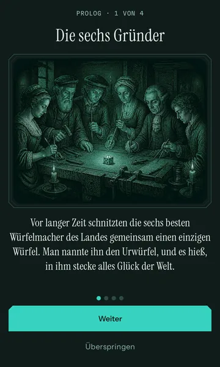
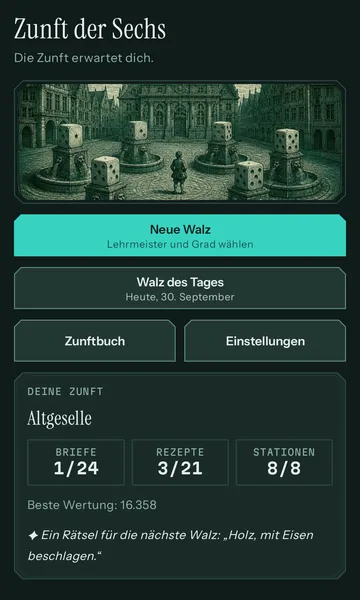
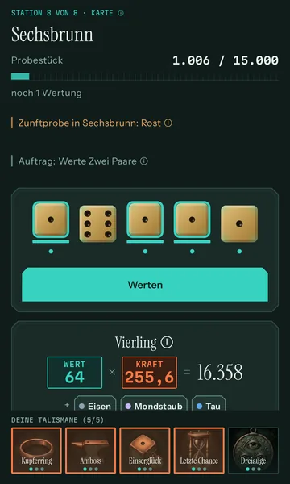
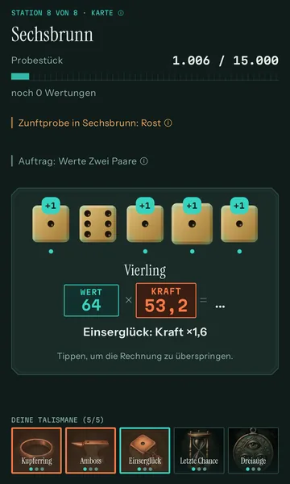
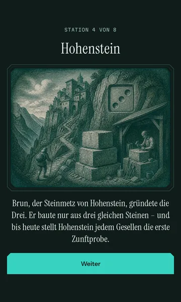
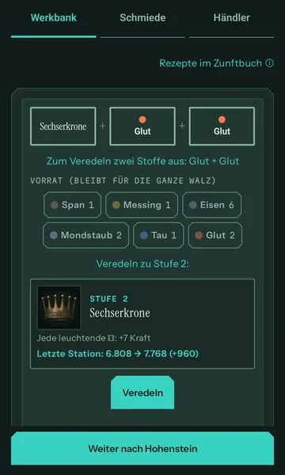
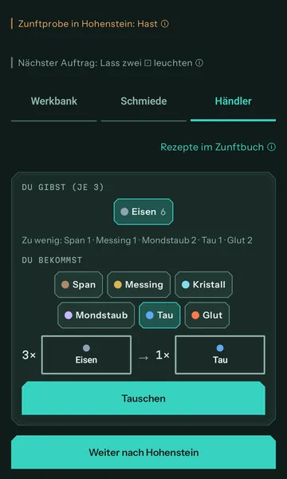

Zunftproben
Nebel, Rost, Hast und andere Proben ändern die Regeln einer Stadt. Welche dich erwarten, siehst du vorab auf der Karte.
Ein Würfelspiel mit Werkstatt. Fünf Würfel, bis zu drei Würfe – und jede Wertung bringt nicht nur Punkte, sondern auch Werkstoffe. Aus ihnen fertigst du Talismane. So wird aus Glück ein Plan.
Für Android, auf Deutsch und Englisch, vorlesbar mit TalkBack.
Eschenau
Ohne Talismane, wie am Anfang der Walz.
Full House
Wert = Grundwert der Kombination + Augen der Würfel, die mitzählen. Gerechnet nach den Regeln der App. Dort entscheidest du dann, wann du wertest – drei Wertungen je Station.
Fünf Würfel, bis zu drei Würfe: Paare, Straßen, Full House und Fünfling. Du hältst, was passt, und würfelst den Rest neu. Die beste Deutung deiner Würfel wählt das Spiel selbst.
Jede Wertung hat zwei Töpfe: Wert × Kraft = Punkte. Drei Wertungen je Station müssen zusammen das Probestück erreichen. Und jede Wertung bringt Werkstoffe – Messing, Eisen, Kristall, Mondstaub.
Zwischen zwei Städten kehrst du in der Werkstatt ein: Talismane fertigen, Würfelseiten umschleifen, Überzähliges tauschen. Dann geht die Walz weiter.


Vor langer Zeit schnitzten die sechs besten Würfelmacher des Landes gemeinsam einen einzigen Würfel: den Urwürfel. Seit Generationen hat ihn niemand gesehen, und in Sechsbrunn ist die Mitte zwischen den Brunnen leer.
Wer Meister werden will, geht auf die Walz: acht Städte, acht Probestücke – von Eschenau bis Sechsbrunn. Jede Stadt war Sitz eines der Gründer. Deine Lehrmeister Anselm, Wendel, Marthe und Almut schicken dich los, jeder mit eigener Stimme, eigenen Stärken und Schwächen. Mit jedem Zunftgrad beginnt ein neues Wanderjahr, und die Städte erzählen mehr – bis du weißt, wohin der Urwürfel gehört.
Kupferstiche, eine Karte der Walz und Stadtgeräusche begleiten dich.









Nebel, Rost, Hast und andere Proben ändern die Regeln einer Stadt. Welche dich erwarten, siehst du vorab auf der Karte.
Anselm spielt ohne Sonderregel – der Maßstab, an dem du die anderen misst. Wendel, Marthe und Almut bringen je einen Vorteil und einen Nachteil mit, so spielt sich die Walz mit jedem anders.
Sechs Zunftgrade vom Gesellen bis zum Meister der Sechs, für jeden Lehrmeister einzeln: 24 Meisterbriefe zu erringen.
Jede Tafel der Geschichte, die du erlebt hast, kannst du im Zunftbuch nachlesen – nach Wanderjahren geordnet, mit den acht Enden der Walz.
Für alle dieselben Würfe, am selben Tag vergleichbar. Ohne Serie, die abreißt, und ohne Erinnerung, die dich zurückholt.
Du kennst das Spiel mit fünf Würfeln und drei Würfen und willst mehr daraus machen als Glück.
Du rechnest gern nach, kombinierst Talismane und knackst Rätsel, bis das Zunftbuch voll ist.
Keine Werbung, keine Energie, keine Wartezeiten, keine Spielwährung. Du spielst, so lange du willst – und hörst auf, wann du willst.
Kein Abo, keine Spielwährung, keine Werbung. Was kostet, ist ein einziger, einmaliger Kauf.
0 €
3,99 €
Marthe und Almut spielst du zusätzlich durch die genannte Tat frei – der Kauf allein öffnet sie nicht. Wendel kostet nichts. Preis in Deutschland, Stand Oktober 2026. Verbindlich ist der Preis, den Google Play beim Kauf anzeigt.
Nein. Das Spiel läuft ohne Internet, auch die Walz des Tages: Sie entsteht auf deinem Gerät aus dem Datum.
Nein, Zunft der Sechs gibt es nur für Android.
Nein. Es geht um kein Geld, es gibt keine Lootboxen und keine Spielwährung. Die Würfel bringen Zufall ins Spiel – was du daraus machst, entscheiden Halten, Talismane und Schmiede.
Keine Registrierung, kein Konto, keine Werbung, keine Tracker. Dein Spielstand bleibt auf deinem Gerät. Die Einzelheiten stehen in der Datenschutzerklärung.
Nein. Der Zunftbrief hängt an deinem Google-Konto; „Kauf wiederherstellen“ holt ihn zurück. Den Spielstand nimmt die Android-Sicherung oder die Datenübertragung beim Gerätewechsel mit, wenn sie eingeschaltet ist.
Deutsch und Englisch. Mit TalkBack lässt es sich vorlesen.
Die Kupferstiche wurden mit KI-Unterstützung in Canva gestaltet. Die Geräusche sind gemeinfreie Aufnahmen (CC0).
Schreib uns an kontakt@wunderkammer-apps.de.
Acht Städte, sechs Gründer, ein verschwundener Würfel.